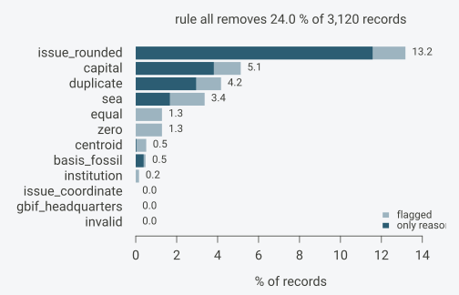
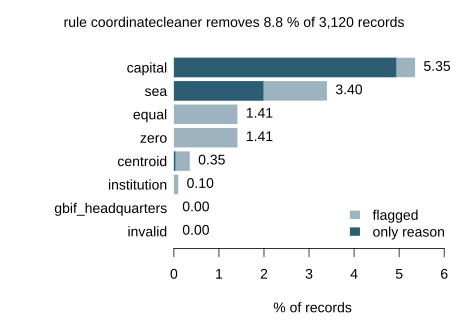
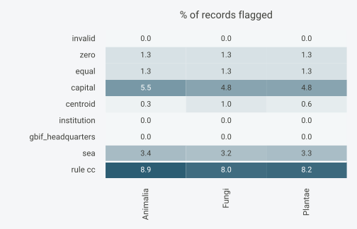
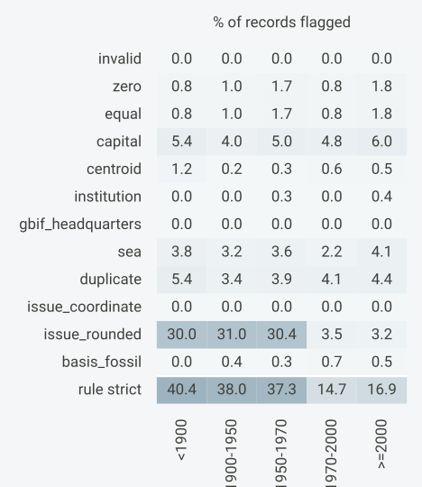
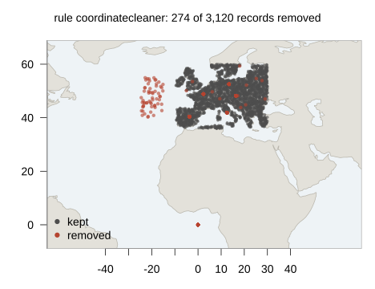

flag_occurrences() stores each test’s result alongside
each record. All records remain in the table. A cleaning rule specifies
which tests to use when filtering: a record is excluded if any test in
the rule flags it. Installation is covered in Get started.
This article compares how individual tests and cleaning rules affect the dataset, then applies a chosen rule:
Flag the records with every test of interest using
flag_occurrences().Compare the share of records flagged by each test and rule using
summary()andplot().Compare these shares by taxon, record age and coordinate precision using
tally_flags()withbyandbins.Select records using the chosen rule with
has_flag().
Example
Example records
The example records are terrestrial: random points on land in Europe,
drawn by rejecting points the sea test flags. Each of 60
species belongs to one kingdom, and each record has a year and the GBIF
fields a download carries. Coordinates are rounded to four decimals.
set.seed(42)
n <- 3000
lon <- runif(3 * n, -10, 30)
lat <- runif(3 * n, 36, 60)
sea <- flag_occurrences(data.frame(decimalLongitude = lon, decimalLatitude = lat),
tests = "sea")$flag_sea
kingdoms <- sample(c("Animalia", "Plantae", "Fungi"), 60, TRUE, c(0.5, 0.4, 0.1))
sp <- sample(60, n, TRUE)
x <- data.frame(decimalLongitude = round(lon[!sea][1:n], 4),
decimalLatitude = round(lat[!sea][1:n], 4),
kingdom = kingdoms[sp],
species = paste("species", sp),
year = sample(1850:2024, n, TRUE, prob = exp(seq(-3, 0, length.out = 175))))The simulation gives records from before 1970 a larger coordinate
uncertainty and assigns GBIF’s COORDINATE_ROUNDED issue to
30% of them, against 3% of later records. The age and uncertainty
patterns later in the article follow from these two choices.
old <- x$year < 1970
x$coordinateUncertaintyInMeters <- round(rlnorm(n, ifelse(old, 8, 4), 1))
x$coordinateUncertaintyInMeters[sample(n, 600)] <- NA
x$basisOfRecord <- ifelse(old, "PRESERVED_SPECIMEN", "HUMAN_OBSERVATION")
x$basisOfRecord[sample(n, 15)] <- "FOSSIL_SPECIMEN"
x$issue <- ifelse(runif(n) < ifelse(old, 0.3, 0.03), "COORDINATE_ROUNDED", "")
x$issue[sample(n, 40)] <- "TAXON_MATCH_FUZZY;GEODETIC_DATUM_ASSUMED_WGS84"Move 150 records to within 3 km of five capitals, 40 to (0, 0) and 60 into the Atlantic, rounded to four decimals like the rest, along with exact copies of earlier records.
capitals <- data.frame(lon = c(16.37, 2.35, 13.40, -3.70, 12.50),
lat = c(48.21, 48.86, 52.52, 40.42, 41.90))
i <- sample(n, 250)
cap <- i[1:150]; orig <- i[151:190]; atl <- i[191:250]
j <- sample(5, 150, TRUE)
x$decimalLongitude[cap] <- round(capitals$lon[j] + runif(150, -0.02, 0.02), 4)
x$decimalLatitude[cap] <- round(capitals$lat[j] + runif(150, -0.02, 0.02), 4)
x[orig, c("decimalLongitude", "decimalLatitude")] <- 0
x$decimalLongitude[atl] <- round(runif(60, -25, -15), 4)
x$decimalLatitude[atl] <- round(runif(60, 40, 55), 4)
x <- rbind(x, x[sample(n, 120), ])
nrow(x)
#> [1] 3120Flag once
The tests are the CoordinateCleaner tests that need only coordinates
and a species, the GBIF issue flags on coordinates and rounding, and the
fossil test on the basis of record. Without tests,
flag_occurrences() would run every test the columns allow;
naming them here keeps the comparison to these twelve.
cc_tests <- c("invalid", "zero", "equal", "capital", "centroid", "institution",
"gbif_headquarters", "sea", "duplicate")
tests <- c(cc_tests, "issue_coordinate", "issue_rounded", "basis_fossil")
f <- flag_occurrences(x, tests = tests)
setdiff(names(f), names(x))
#> [1] "flags" "flag_invalid" "flag_zero"
#> [4] "flag_equal" "flag_capital" "flag_centroid"
#> [7] "flag_institution" "flag_gbif_headquarters" "flag_sea"
#> [10] "flag_duplicate" "flag_issue_coordinate" "flag_issue_rounded"
#> [13] "flag_basis_fossil"The result is x with a flags column and one
logical flag_<test> column per test.
What each test removes
summary() turns the flags into shares of records.
Without a rules argument it uses one rule,
all, holding every test that was run.
summary(f)
#> <occ_summary> 3,120 records
#> rule all: removes 745 (23.88 %)
#> rule test n flagged pct only pct_only
#> all invalid 3120 0 0.00 0 0.00
#> all zero 3120 44 1.41 0 0.00
#> all equal 3120 44 1.41 0 0.00
#> all capital 3120 167 5.35 135 4.33
#> all centroid 3120 11 0.35 1 0.03
#> all institution 3120 3 0.10 0 0.00
#> all gbif_headquarters 3120 0 0.00 0 0.00
#> all sea 3120 106 3.40 50 1.60
#> all duplicate 3120 131 4.20 95 3.04
#> all issue_coordinate 3120 0 0.00 0 0.00
#> all issue_rounded 3120 394 12.63 349 11.19
#> all basis_fossil 3120 16 0.51 11 0.35
#> all (any) 3120 745 23.88For each test of the rule, flagged is the number of
records carrying that test and pct the same as a percentage
of all records. only counts the records for which that test
is the sole flag among the rule’s tests: dropping that test from the
rule would keep exactly these records. The row (any) is the
rule itself, the records that carry at least one of its tests.
A record can fail several tests at once. The 44 records at (0, 0),
the 40 moved there and 4 of the copies, are flagged by
zero, equal (|0| = |0|) and sea,
so none of them is counted under only. The per-test shares
therefore add up to more than the rule’s total. The rule’s
pct minus the sum of the pct_only shares is
the share of records flagged by more than one of its tests.
pct says how often a test flags a record;
pct_only says how much of the rule’s loss would disappear
without that test.
The same numbers as a plot: the full bar is pct, the
dark part pct_only.
plot(f)
Comparing rules
Candidate rules go into rules as a named list. This
example compares three, with names that label them for this article:
strictuses all twelve tests.coordinatecleaneruses the eight tests of this set that CoordinateCleaner’sclean_coordinates()runs by default:invalid,zero,equal,capital,centroid,institution,gbif_headquartersandsea. That default also runs an outlier test, which this example leaves out, and does not run the duplicate test.minimalusesinvalid,zeroandsea: coordinates outside the valid range, on either zero axis or near (0, 0), and in the sea. For terrestrial records such as these, the three screen for misplaced coordinates; for marine species,seawould remove valid records.
rules <- list(strict = tests,
coordinatecleaner = setdiff(cc_tests, "duplicate"),
minimal = c("invalid", "zero", "sea"))
s <- summary(f, rules = rules)
s[s$test == "(any)", c("rule", "n", "flagged", "pct")]
#> rule n flagged pct
#> strict 3120 745 23.88
#> coordinatecleaner 3120 274 8.78
#> minimal 3120 106 3.40The selection above keeps one row per rule. plot() draws
one rule at a time. This plot and the kingdom comparison below use
coordinatecleaner, the rule applied at the end of this
article:
plot(s, rule = "coordinatecleaner")
The records at (0, 0) again count under no only. The
capital test is the sole reason for most of its records.
By group
The arguments of tally_flags() pass through
summary(), so by splits the shares by any
column of the records. Each percentage is out of the records in its own
group.
s <- summary(f, rules = rules["coordinatecleaner"], by = "kingdom")
s[s$test %in% c("capital", "sea", "(any)"), ]
#> <occ_summary> 3,120 records, grouped by kingdom
#> kingdom rule test n flagged pct only pct_only
#> Animalia coordinatecleaner capital 1770 92 5.20 85 4.80
#> Animalia coordinatecleaner sea 1770 64 3.62 36 2.03
#> Animalia coordinatecleaner (any) 1770 156 8.81
#> Fungi coordinatecleaner capital 311 20 6.43 17 5.47
#> Fungi coordinatecleaner sea 311 6 1.93 3 0.96
#> Fungi coordinatecleaner (any) 311 26 8.36
#> Plantae coordinatecleaner capital 1039 55 5.29 52 5.00
#> Plantae coordinatecleaner sea 1039 36 3.46 23 2.21
#> Plantae coordinatecleaner (any) 1039 92 8.85With grouping, plot() shows a grid of tests by groups,
shaded by the share each test flags in each group, with the rule itself
in the bottom row.
plot(f, rules = rules["coordinatecleaner"], by = "kingdom")
Record age and coordinate precision
Year and coordinate uncertainty stay raw columns of the records and
are cut into classes only when tallying. bins takes the
break points and adds a <column>_bin grouping column.
Each class includes its lower break and excludes its upper one, so
1950-1970 holds the years 1950 to 1969. Values below the
first break form <1900, values from the last break on
form >=2000, and missing values form the class
missing. Each percentage is out of the records in its
class.
This section reads the shares under strict, the only one
of the three rules that includes issue_rounded, so the
share of records with GBIF’s rounding issue can be followed across age
and uncertainty classes.
t <- tally_flags(f, rules = rules,
bins = list(year = c(1900, 1950, 1970, 2000)))
s <- summary(t)
s[s$rule == "strict" & s$test %in% c("issue_rounded", "(any)"),
c("year_bin", "test", "n", "pct")]
#> year_bin test n pct
#> <1900 issue_rounded 223 26.91
#> <1900 (any) 223 35.87
#> 1900-1950 issue_rounded 505 31.09
#> 1900-1950 (any) 505 39.21
#> 1950-1970 issue_rounded 364 31.04
#> 1950-1970 (any) 364 40.38
#> 1970-2000 issue_rounded 867 3.11
#> 1970-2000 (any) 867 15.80
#> >=2000 issue_rounded 1161 3.19
#> >=2000 (any) 1161 15.76The higher issue_rounded share before 1970 reproduces
the rate the simulation assigned to older records.
tally_flags() returns the counts; summary()
on its result gives the percentages, and plot() the grid.
The tally is the one to keep when the counts will be summed or merged
later.
plot(t, rule = "strict")
The same works for coordinate uncertainty,
coordinateUncertaintyInMeters, a distance in metres
describing how uncertain the stated location is:
t <- tally_flags(f, rules = rules["strict"],
bins = list(coordinateUncertaintyInMeters = c(100, 1000, 10000)))
s <- summary(t)
s[s$test %in% c("issue_rounded", "(any)"),
c("coordinateUncertaintyInMeters_bin", "test", "n", "pct")]
#> coordinateUncertaintyInMeters_bin test n pct
#> <100 issue_rounded 1203 2.66
#> <100 (any) 1203 15.05
#> 100-1000 issue_rounded 544 9.38
#> 100-1000 (any) 544 21.69
#> 1000-10000 issue_rounded 645 30.08
#> 1000-10000 (any) 645 39.53
#> >=10000 issue_rounded 102 27.45
#> >=10000 (any) 102 30.39
#> missing issue_rounded 626 14.22
#> missing (any) 626 25.56The simulation drew larger uncertainties for older records, so the share with the rounding issue is highest in the classes from 1 km up.
Where the removed records are
On a flagged data frame, plot(type = "map") draws the
records over the Natural Earth land, coloured by whether the first rule
of rules removes them. The map returns to
coordinatecleaner, the rule applied below.
plot(f, type = "map", rules = rules["coordinatecleaner"])
Applying the rule
Choose the tests by what your analysis needs. Suppose the example
records are used to map where each species occurs on a 10 km grid.
Coordinates that may point to a capital, a country centroid, an
institution, GBIF’s headquarters or the sea can place a record in the
wrong cell, so the example applies coordinatecleaner.
Repeated records of a species at the same coordinates fall in the same
cell and leave the map unchanged, so duplicate stays out of
the rule.
Other analyses add other tests:
basis_fossilwhen the analysis concerns living populations.duplicatewhen each combination of species and coordinates should count once, for example in a presence-only distribution model.issue_coordinateto exclude records with GBIF’s georeferencing warnings.
issue_rounded is left out. GBIF sets
COORDINATE_ROUNDED when the original coordinate was
modified by rounding to five decimals (GBIF
issue definition). A precision threshold can be taken from
coordinate uncertainty instead.
has_flag() returns TRUE for every record
carrying at least one test of the rule, so the cleaned table is the
complement.
A cut on record age or coordinate uncertainty is a filter on the raw columns, with an explicit choice for missing values. This one keeps records from 1950 on, and records whose coordinate uncertainty is at most 10 km or not stated:
u <- clean$coordinateUncertaintyInMeters
keep <- !is.na(clean$year) & clean$year >= 1950 & (is.na(u) | u <= 10000)
sum(keep)
#> [1] 2143The removed records keep their flags. Another rule built from the
tests already run reads the same f. Adding a test that was
not run, or changing buffers, settings, reference data or
the land scale, needs a new call to flag_occurrences().
To compare with clean_coordinates() output, both
packages need the same tests, buffers and reference data. At its
defaults, clean_coordinates() adds its outlier test and
draws the sea test from the 1:50 million land, while
flag_occurrences() uses the 1:110 million land and its own
gazetteers; land_scale = 50 and
reference = "CoordinateCleaner" align the last two. Coming from CoordinateCleaner maps the
remaining arguments.
How the shares are computed
flag_occurrences() returns its input with class
occ_flags, and summary() returns a data frame
of class occ_summary. summary() and
plot() dispatch on these classes; rows of a summary are
selected as in any data frame.
All counts come from the integer flag word
of each record, in which each test
has one bit. Write
for the mask with only the bit of
set,
for the mask of a rule’s tests
(flag_mask(T)), and
for bitwise AND. A record is
flagged by test when ,
removed by the rule when ,
removed by alone when .
A removed record carries either one test of the rule or several. The
rule’s removed count minus the sum of the only counts over
is therefore the number of records flagged by more than one test of the
rule.
tally_flags() counts these per group in one pass over
the flags, which is also how it runs on on-disk output part by part (see
Large tables on disk).